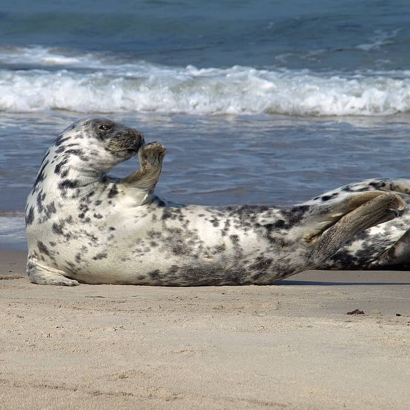

Kenmerken
Uiterlijk
De vacht van de grijze zeehond verschilt in kleur aan de bovenzijde lichtgrijs, bruin of zilverkleurig met donkere en meestal zwarte vlekken. De onderkant van de zeehond is lichter dan de bovenzijde. Bij mannetjes heeft de vacht meestal een donkere ondergrond met lichte vlekken en bij vrouwtjes is dit omgekeerd.
De voorpoten van de grijze zeehond hebben lange nagels en kunnen gebruikt worden door de zeehond om rotsen of gladde ijsplaten te beklimmen. De oorschelpen zijn meestal niet zichtbaar en de oren kunnen rechtop gericht worden.
Fysieke kenmerken
gewicht
De grijze zeehonden kunnen tot 290 kg zwaar wegen. De vrouwtjes zijn iets lichter en kunnen wegen tot 250 kg. Het gewicht van een grijze zeehond kan overigens behoorlijk verschillen, zo zijn er mannetjes van 160 kg en vrouwtjes van 120 kg.
lengte
De grijze zeehonden kunnen tot 3 meter lang worden. De vrouwtjes integendeel zijn lichter met een lengte tot 225 centimeter.
Gemiddelde levensduur
De mannelijke grijze zeehonden worden gemiddeld 30 jaar oud en de vrouwelijke worden gemiddeld tot 45 jaar oud.